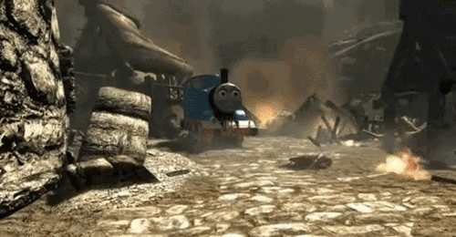
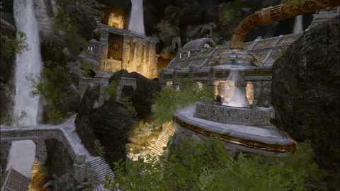

Mods
Alguien que en muchos otros juegos, Skyrim contiene una gran variedad de modificacion para que el juego pueda ser, ya sea destruido por completo (jugar con una cantidad enorme mods), o bien para poder optimizarlo mejor, dentro de este menu, se encontraran tipos de mods para Skyrim:
Memes

Armas

Armaduras

Optimizacion

Diseño de personaje